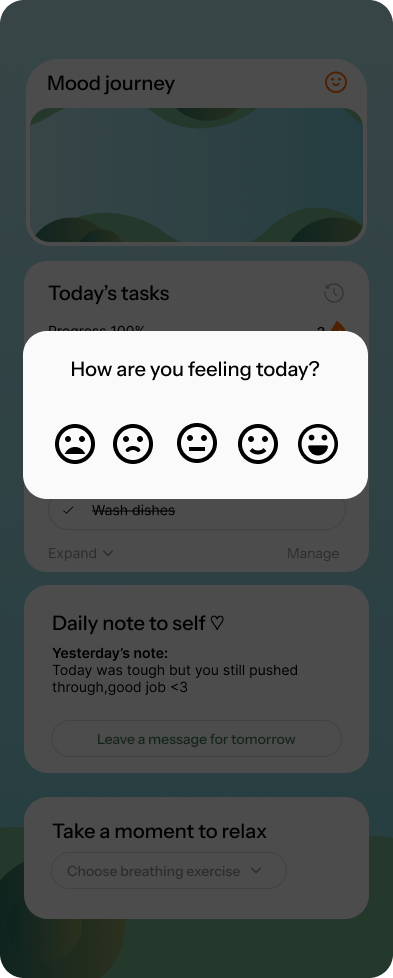
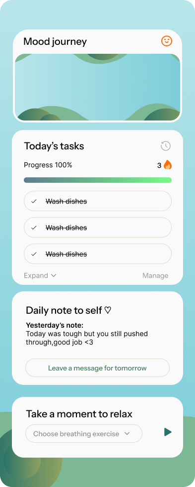
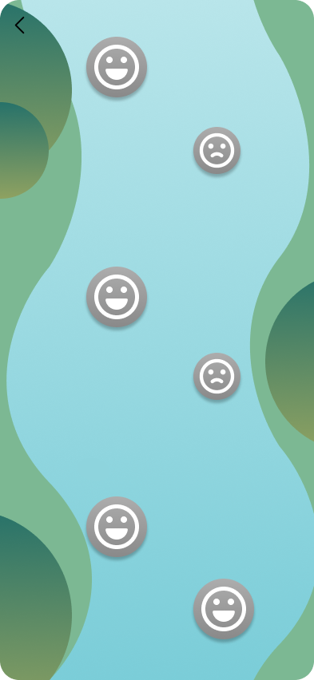
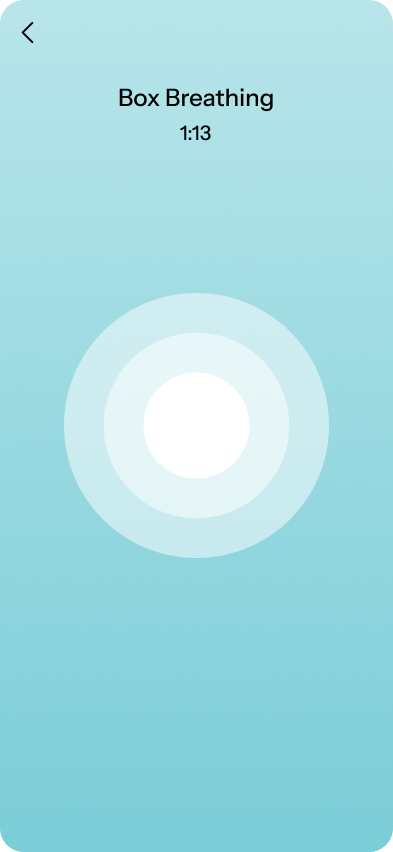
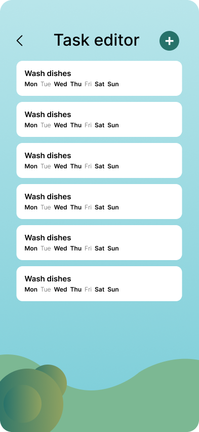
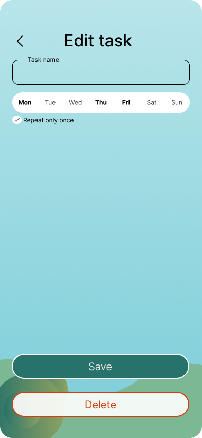
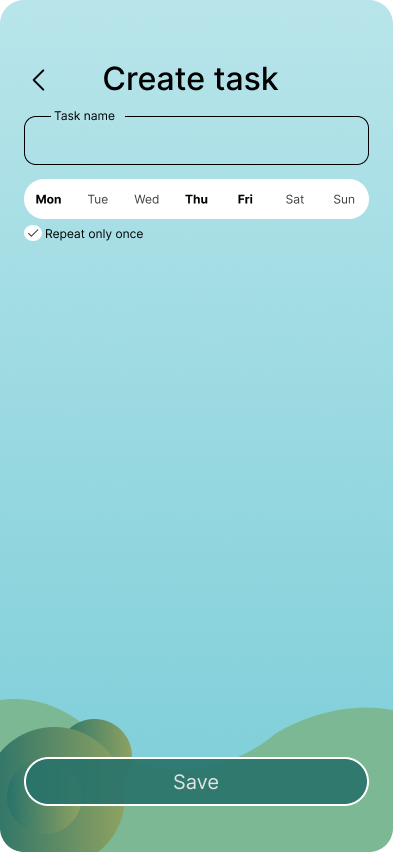
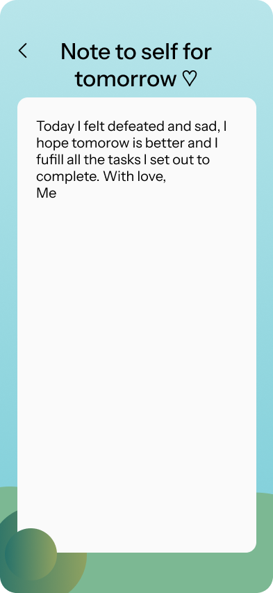
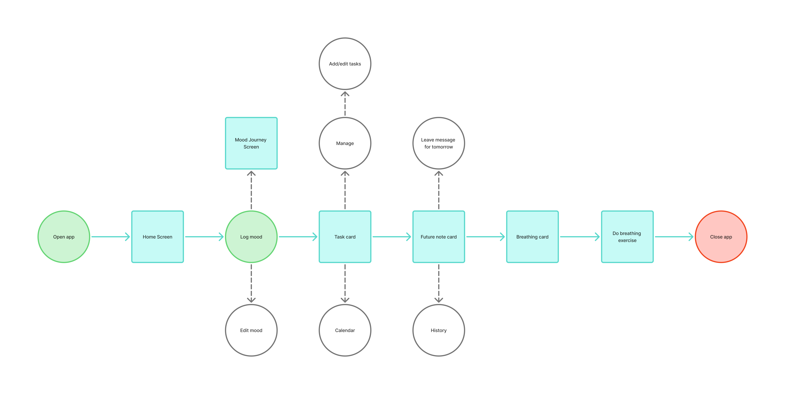
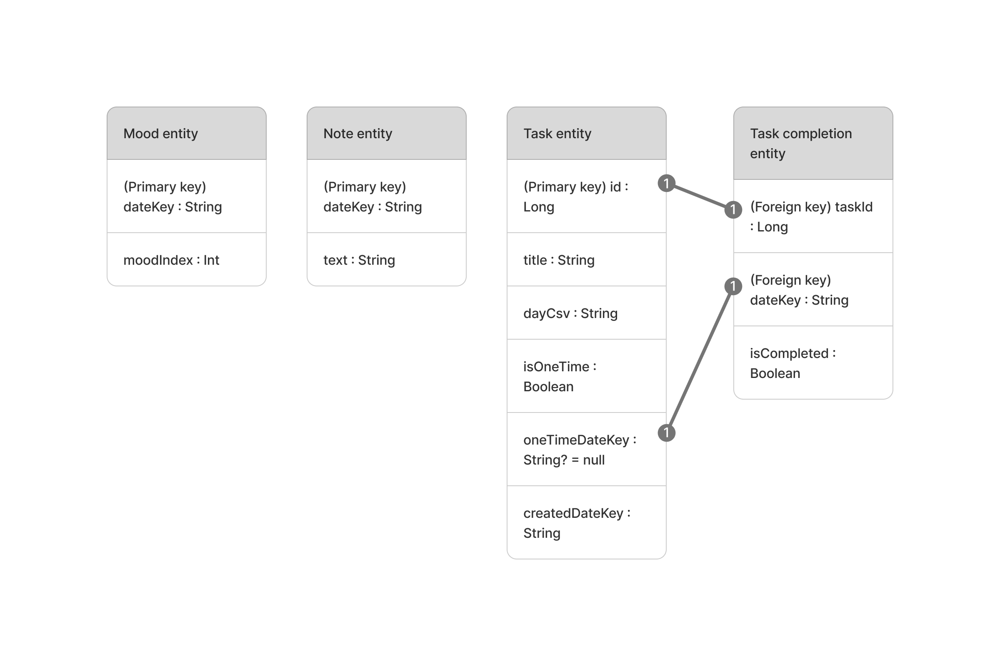

MindFlow
Your mental health companion app
Description
MindFlow is a mobile app intended for people who struggle with their mental health, helping them keep up with their responsibilities while tracking their mental health journey. The app combines task organization, mood tracking, calming breathing exercises, and personal notes to encourage their future self.
Team Members
- Jan (Mirela) Dragutan
- Nina Janikovicova
Use Case
Mental health challenges are extremely common worldwide — more than 1 billion people live with mental health conditions such as anxiety and depression globally, affecting their daily life and making everyday tasks harder to manage. MindFlow helps users stay on top of their responsibilities while reflecting on their mental health journey. Meditation, being one of the best ways to lower stress, is supported through breathing exercises to help manage emotions.
Target Users
The target users are individuals who struggle with stress, depression, and anxiety, as well as anyone experiencing lack of motivation, emotional regulation issues, or difficulty maintaining daily routines.
Hi-Fi








UserFlow

ERD

Reflection from Jan Dragutan
This project was, more than anything, a fun learning and creative experience to me, but of course, we did encounter challenges along the way. One of the things we struggled the most with was the display of the 'Note from yesterday', but after a lot of trial and error, my teammate finally managed to fix it. Besides that, we mainly encountered UI bugs/issues that were pointed out by our usability testers. Although most testers had very different opinions on what a certain component should or shouldn't look, we tried our best to summarize their feedback in order to implement their requests by splitting the tasks between the two of us and fixing them according to priority/severity. Overall, I am very satisfied with the final result, as well as with the collaboration within the team as we both contributed equally to the project and every decision we took was upon mutual agreement. I am also happy I got to focus more on the design aspect of the app, getting to actually draw original art for it, like the logo, background and the lily pads in the moodflow tab. In terms of code, we both got to work on everything starting from UI and ending with the data layer, which really helped me strengthen my kotlin skills. Generally our app met and even exceeded our MVP, so there isn't much we would like to improve, but we can always add more features or try to improve the accessibility features of our app.
Reflection from Nina Janikovicova
I feel like during CCL3 I have understood a lot of the contents related to mobile coding. I started out not being sure about how themes work and what repositories, daos and entities represent. Understanding the structure of the data flow from data to UI layer made is possible to end up with a well-organized project. I became more comfortable working in Kotlin and also learned how to properly work with GitHub in a group, with many merge conflicts forcing us to do so. I enjoyed working with Jan and in my opinion we made a great team, progressing through tasks really quickly thanks to great organization. There isn’t a single file that both of us didn’t touch. I have worked with the data layer, as well as UI layer and themes. Most of our progress was based on communication where we took the smallest of steps we needed to do in the moment and finished them before moving on the next set of tasks. We worked on the hi-fi prototype together and brainstormed the process of our user protocol as well as ran the tests together. Jan was the one interviewing the users and I was the one keeping notes on their feedback. I have created the page for our protocol and formatted it while Jan analysed and concluded our data. Biggest challenge we encountered was leaving a functional note for tomorrow, and its display in the app the next day. I struggled with it for 3 days, but in the end it was just a matter of mismatched values and I have managed to fix it. If we were to further develop the app, I would add a dark theme for accessibility. UI structure of MindFlow would also allow us to add more feature, thanks to our tab system in the home page. In the end we managed to execute everything we set out to do in the beginning, and I am content with the result.